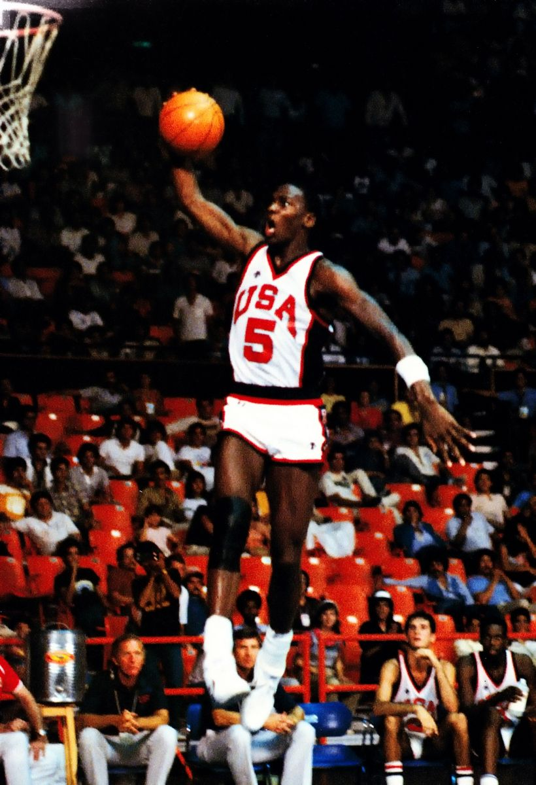
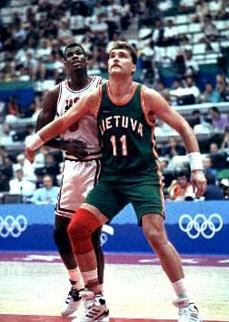
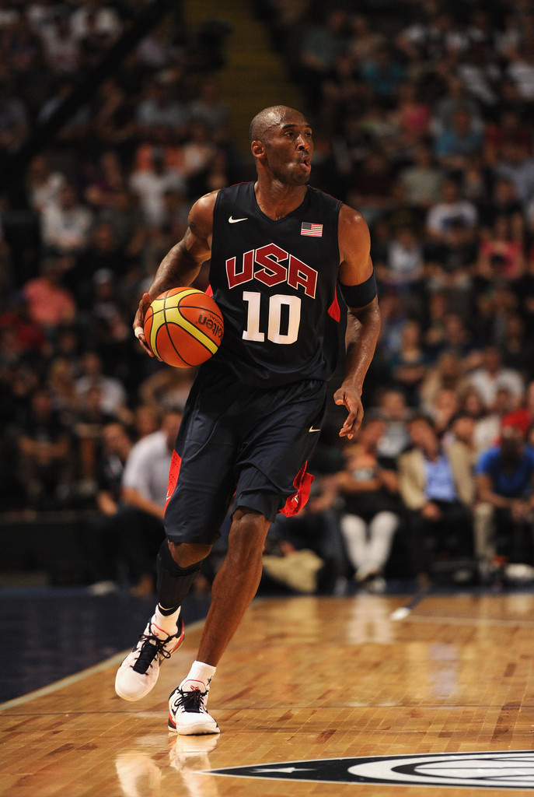
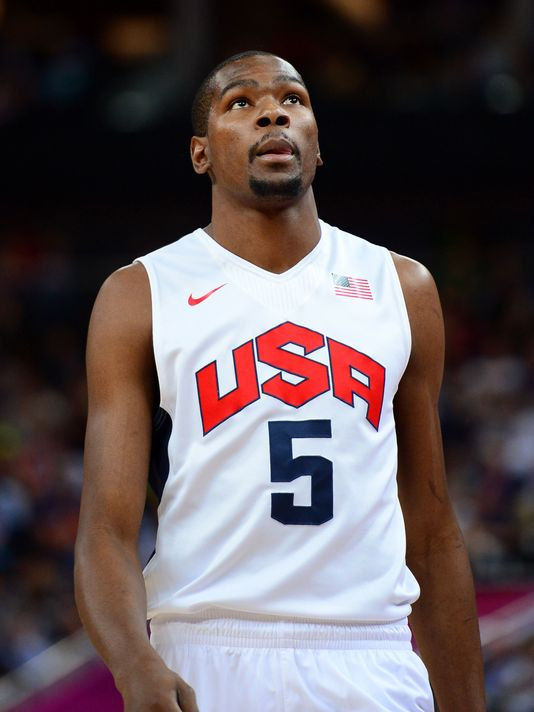
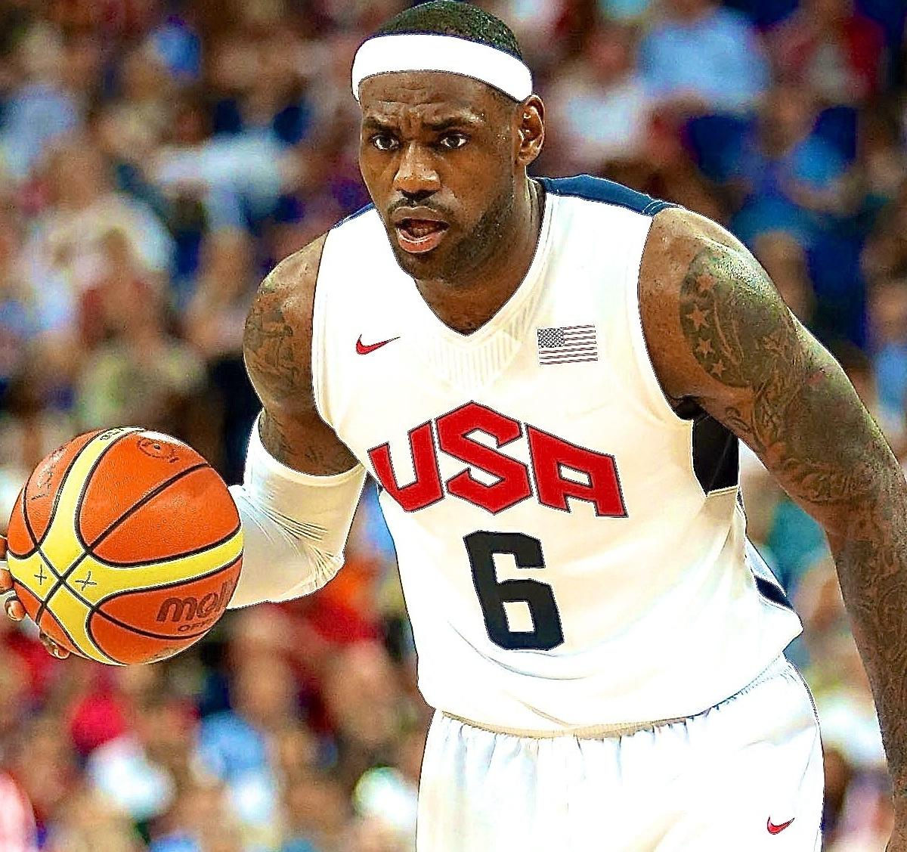
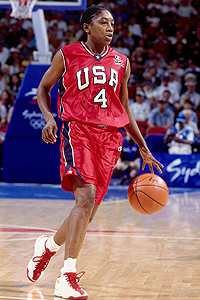
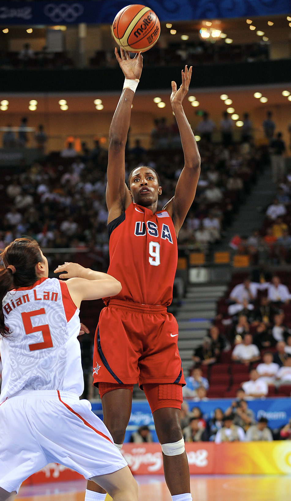
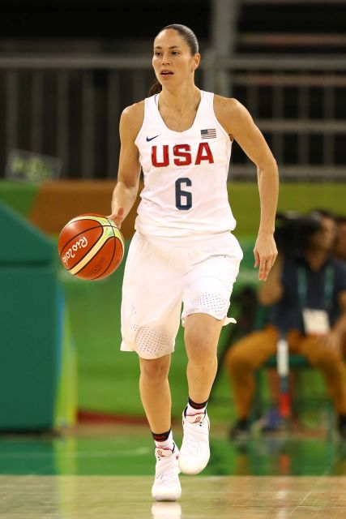
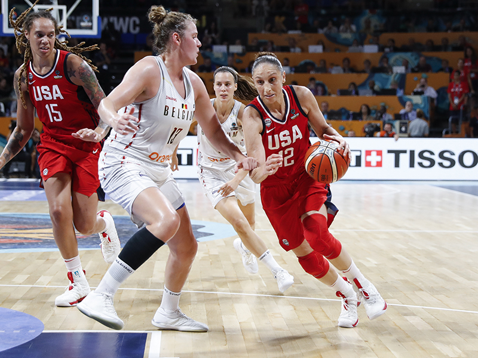
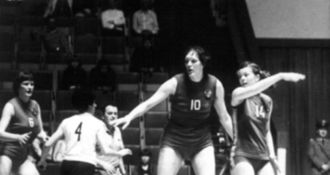

Michael Jordan (United States): double Olympic champion in 1984 and 1992. 
Arvydas Sabonis (Soviet Union and Lithuania): Olympic champion in 1988 (3rd in 1992 and 1996).

Kobe Bryant (United States): double Olympic champion in 2008 and 2012. 
Kevin Durant (United States): double Olympic champion in 2012 and 2016. 
LeBron James (United States): double Olympic champion in 2008 and 2012 (3rd in 2004). 
Teresa Edwards (United States): quadruple Olympic champion in 1984, 1988, 1996 and 2000 (3rd in
1992). 
Lisa Leslie (United States): quadruple Olympic champion in 1996, 2000, 2004 and 2008. 
Sue Bird (United States): quadruple Olympic champion in 2004, 2008, 2012 and 2016. 
Diana Taurasi (United States): quadruple Olympic champion in 2004, 2008, 2012 and 2016. 
Uļjana Semjonova (Soviet Union): double Olympic champion in 1976 and 1980. 